Newsletter et qualité numérique selon Opquast V5
Formation MiWeb. Les transcriptions et le discours oral accompagnent chaque slide.
Newsletter et qualité numérique selon Opquast V5
Slide 1 sur 18 - Une newsletter, un service numérique complet
Slide 1 - Une newsletter, un service numérique complet
Lecture du visuel
Une enveloppe relie sept stations de l’expérience de l’abonné : s’informer, choisir, confirmer, recevoir, consulter, se désinscrire puis retrouver les éditions.
Le parcours de l’abonné
- Savoir
- Choisir
- Confirmer
- Recevoir
- Consulter
- Se désinscrire
- Retrouver
Idée directrice
Une newsletter, un service numérique complet.
Message à retenir
La newsletter est un service complet, du choix initial à la consultation des archives.
Partons d’une expérience familière : recevoir un message dont on ne se rappelle pas l’inscription, ou chercher comment arrêter les envois. La qualité ne se joue donc pas uniquement dans le courriel reçu.
Nous allons suivre l’expérience de l’abonné dans l’ordre : ce qu’il sait avant de s’inscrire, les choix qu’il fait et les possibilités qui restent ouvertes ensuite.
Le parcours utilisateur : de l’inscription à la fin de service
La qualité numérique est une continuité. Le cycle de vie d’un abonné doit être sécurisé à chaque étape du parcours utilisateur pour maintenir une relation de confiance durable.
- Collecte (abonnement) — l’exigence est celle de la transparence totale. Le consentement doit résulter d’une action volontaire, excluant tout artifice technique.
- Confirmation — cette étape de réassurance doit valider l’action et informer immédiatement sur la fréquence et la nature des envois.
- Réception et consultation — l’utilisateur doit identifier l’expéditeur sans ouvrir le message. Le contenu doit respecter l’économie de données pour limiter l’impact environnemental invisible.
- Rupture de service (désabonnement) — la simplicité de sortie est le garant de la qualité de service. Elle doit être immédiate, sans obstacle cognitif ou technique.
Slide 2 - 9 règles au cœur de notre parcours
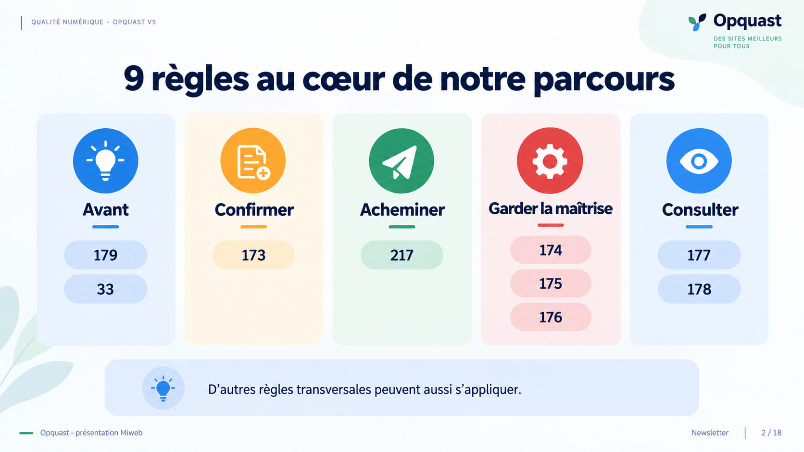
Lecture du visuel
Les neuf règles sont réparties en cinq groupes : avant l’inscription (179 et 33), confirmation (173), acheminement (217), maîtrise de la relation (174, 175 et 176), puis consultation (177 et 178). Un rappel précise que d’autres règles transversales peuvent s’appliquer.
Avant
- 179
- 33
Confirmer et acheminer
- Confirmer : 173
- Acheminer : 217
Garder la maîtrise
- 174
- 175
- 176
Consulter
- 177
- 178
Périmètre
D’autres règles transversales peuvent aussi s’appliquer.
Message à retenir
Ces neuf règles cadrent le parcours étudié sans épuiser les exigences transversales.
Le support suit neuf règles directement liées au parcours. Sept appartiennent à la rubrique Newsletter ; nous ajoutons la règle 33, qui intervient lorsqu’un abonnement est proposé pendant une commande, et la règle 217 sur l’authentification du domaine d’envoi.
Cette sélection sert de fil de lecture. Elle ne recense pas toutes les règles qui peuvent concerner le formulaire, les données personnelles, la sécurité ou le site.
Slide 3 - Savoir avant de s’abonner
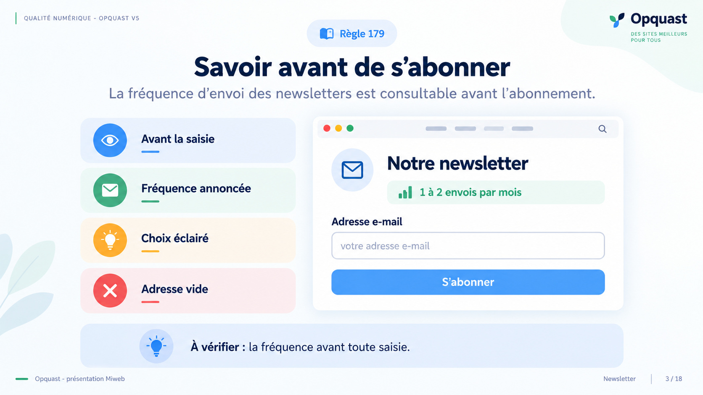
Lecture du visuel
La règle 179 est associée à une page d’abonnement. La fréquence annoncée apparaît avant un champ d’adresse encore vide, pour permettre un choix éclairé avant toute saisie.
Règle 179
La fréquence d’envoi des newsletters est consultable avant l’abonnement.
Lecture de l’interface
- La fréquence est annoncée avant la saisie.
- Le champ d’adresse est encore vide.
- L’utilisateur peut choisir en connaissance de cause.
Vérification
À vérifier : la fréquence avant toute saisie.
Message à retenir
La fréquence doit pouvoir être consultée avant que l’abonné saisisse son adresse.
Avant de donner son adresse, l’utilisateur doit savoir à quel rythme il recevra les messages. L’information apparaît donc avant le champ.
La règle 179 n’impose pas une fréquence mensuelle ni un rythme particulier. Une fréquence irrégulière peut être annoncée comme telle : l’information doit être disponible avant l’abonnement.
Slide 4 - Laissez l’utilisateur choisir
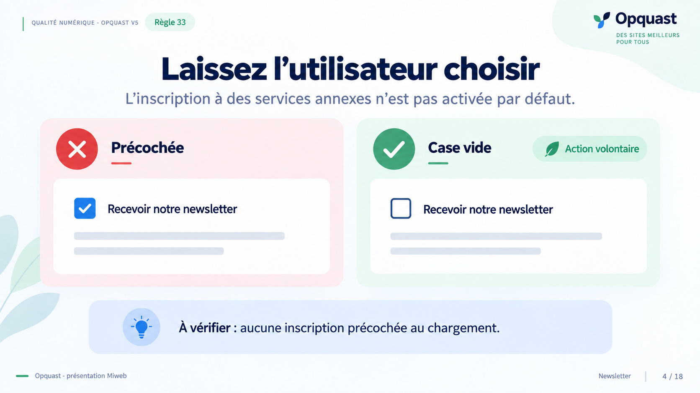
Lecture du visuel
Deux états d’une commande sont comparés. À gauche, l’option de newsletter est cochée par défaut ; à droite, elle est vide et l’utilisateur peut l’activer volontairement.
Règle 33
L’inscription à des services annexes n’est pas activée par défaut.
Deux états comparés
- Case newsletter cochée au chargement.
- Case newsletter vide, à activer par une action volontaire.
Vérification
À vérifier : aucune inscription précochée au chargement.
Message à retenir
Lorsqu’elle est proposée pendant une commande, l’inscription ne doit pas être activée par défaut.
La règle 33 concerne ici l’inscription à un service annexe proposée dans un parcours de commande. Le premier état montre une option déjà cochée ; le second laisse la décision à l’utilisateur.
Une case qu’il est possible de décocher reste une option activée par défaut : c’est de l’opt-out. Cette règle ne se généralise pas à tous les formulaires.
Slide 5 - Confirmer avant d’activer
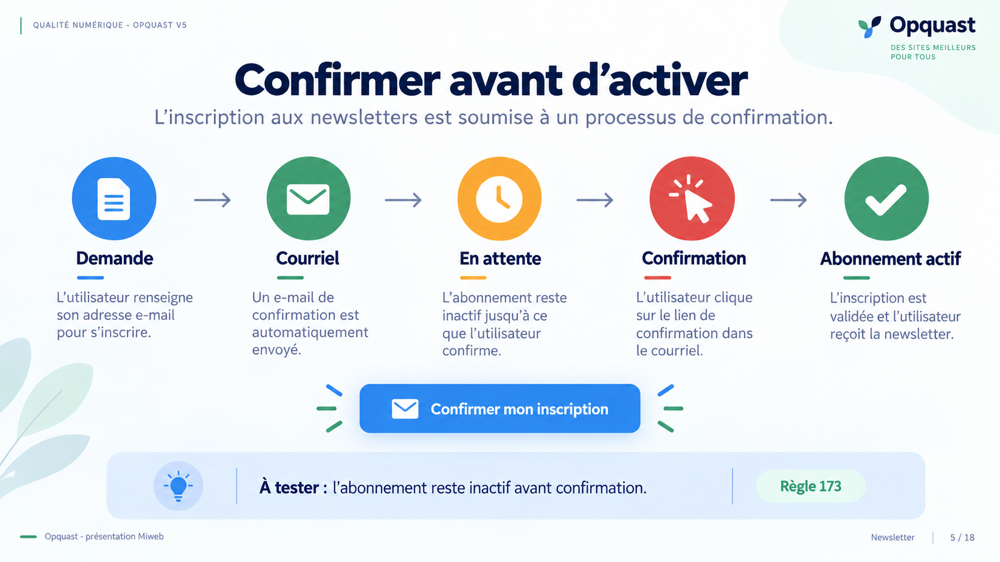
Lecture du visuel
Une demande d’inscription passe par un courriel et une action de confirmation. L’état « Abonnement actif » n’arrive qu’après cette action ; avant, le statut est « En attente ».
Règle 173
L’inscription aux newsletters est soumise à un processus de confirmation.
Étapes représentées
- Demande d’inscription
- Courriel de confirmation
- Abonnement en attente
- Action de confirmation
- Abonnement actif
Vérification
À tester : l’abonnement reste inactif avant confirmation.
Message à retenir
La demande ne devient pas un abonnement actif avant la fin du processus de confirmation.
La saisie de l’adresse lance une demande, mais ne suffit pas à activer l’abonnement. Une action doit encore avoir lieu depuis le message reçu ; le double opt-in est un nom courant pour ce mécanisme.
Pour le vérifier, suivons un parcours de test et observons l’état avant puis après la confirmation. Un accusé de réception du formulaire ne prouve pas à lui seul que l’adresse est abonnée.
Slide 6 - Authentifiez le domaine d’envoi
Lecture du visuel
Le courriel traverse trois contrôles nommés SPF, DKIM et DMARC avant la réception. La slide associe ces mécanismes à la réduction des risques d’usurpation et de classement en spam.
Règle 217
Le domaine de messagerie est authentifié.
Trois mécanismes
- SPF : serveurs autorisés.
- DKIM : signature.
- DMARC : politique et rapports.
Contrôles
- Examiner les enregistrements DNS.
- Vérifier les en-têtes d’un courriel reçu.
Portée
L’authentification réduit les risques d’usurpation et de spam ; elle ne garantit pas la réception en boîte principale.
Message à retenir
L’authentification réduit les risques d’usurpation, sans garantir l’arrivée en boîte principale.
La règle 217 porte sur l’authentification du domaine de messagerie. SPF décrit les serveurs autorisés à envoyer pour le domaine, DKIM signe le message et DMARC définit une politique ainsi que des rapports.
Le dessin ne signifie pas qu’un message authentifié arrivera nécessairement dans la boîte principale. Un contrôle réel passe par les enregistrements DNS et les en-têtes d’un courriel reçu, en vérifiant leur cohérence avec le domaine affiché.
Slide 7 - Chaque envoi contient sa porte de sortie
Lecture du visuel
Plusieurs éditions de newsletter sont représentées, chacune avec un lien « Se désinscrire ». La slide distingue le lien présent et repérable du résultat réel, à vérifier en suivant le parcours.
Règle 174
Un lien de désinscription est présent dans chaque newsletter.
Lecture du visuel
- Le lien figure dans chaque édition représentée.
- Le lien doit être repérable et activable.
Test
À tester : le lien mène à une désinscription effective.
Message à retenir
Le lien doit figurer dans chaque newsletter et mener à une sortie effective.
La règle 174 demande un lien dans chaque envoi. Sa présence visuelle n’est qu’un premier contrôle : il faut activer le lien et vérifier que le parcours aboutit à une désinscription réelle.
Pour un audit, ne tester qu’un gabarit récent ne prouve pas le fonctionnement des anciennes éditions. Vérifions plusieurs messages et la conséquence sur les envois pour l’abonnement de test.
Slide 8 - Se désinscrire sans nouveau courriel
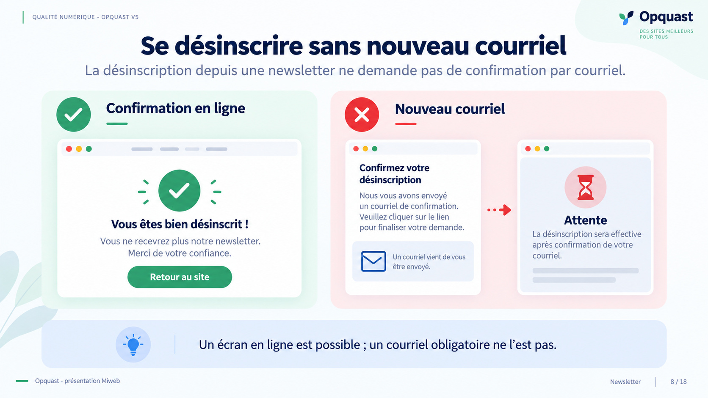
Lecture du visuel
Deux suites sont opposées après une demande de désinscription : une confirmation en ligne qui mène à la sortie, et une boucle vers un nouveau courriel puis une attente, signalée comme le parcours à éviter.
Règle 175
La désinscription depuis une newsletter ne demande pas de confirmation par courriel.
Parcours possibles
- Confirmation en ligne, puis désinscription.
- Nouveau courriel et attente : détour à éviter.
Nuance
Un écran de confirmation en ligne est possible ; un nouveau courriel obligatoire ne l’est pas.
Message à retenir
Une confirmation peut se faire en ligne ; la désinscription ne doit pas exiger un nouveau courriel.
La règle 175 écarte la confirmation par courriel. Elle n’interdit pas un écran en ligne qui demande de confirmer le choix, par exemple pour éviter une désinscription involontaire.
Ne présentons donc pas le premier clic comme forcément suffisant : suivons le parcours jusqu’au résultat et vérifions qu’il ne demande pas un nouveau message pour terminer.
Slide 9 - Trouver la sortie depuis le site
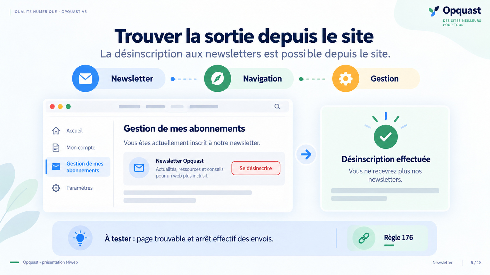
Lecture du visuel
Depuis la navigation du site, l’utilisateur ouvre la gestion de ses abonnements puis se désinscrit. Un écran final confirme « Désinscription effectuée » et indique que les newsletters ne seront plus reçues.
Règle 176
La désinscription aux newsletters est possible depuis le site.
Parcours représenté
- Ouvrir la rubrique Newsletter depuis la navigation.
- Accéder à la gestion des abonnements.
- Se désinscrire.
- Lire la confirmation : « Désinscription effectuée ».
Vérification
À tester : la page est trouvable et les envois s’arrêtent effectivement.
Message à retenir
La désinscription doit aussi être trouvable depuis le site et produire un résultat effectif.
La règle 176 prévoit une possibilité de désinscription depuis le site, sans dépendre de la recherche d’un ancien courriel. Le parcours illustré passe par la navigation, la gestion de l’abonnement et une confirmation du résultat.
En audit, partons de la navigation ordinaire, utilisons le dispositif et vérifions que les envois cessent. La page doit être trouvable et la confirmation compréhensible.
Slide 10 - Une sortie trouvable, sans détour inutile
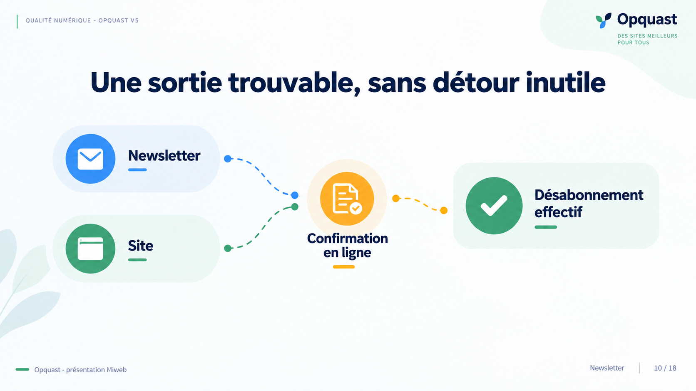
Lecture du visuel
Deux entrées, « Newsletter » et « Site », convergent vers un désabonnement effectif. Une confirmation en ligne apparaît sur le parcours depuis la newsletter ; le schéma ne pose pas d’exigence de symétrie entre entrée et sortie.
Deux voies vers la sortie
- Depuis une newsletter.
- Depuis le site.
Résultat commun
Désabonnement effectif.
Confirmation
Une confirmation en ligne est représentée sur le parcours depuis la newsletter.
Message à retenir
Depuis le courriel ou le site, l’abonné doit pouvoir trouver une sortie qui aboutit.
Cette slide fait une pause après les trois règles consacrées à la désinscription. Le lien dans chaque newsletter et la possibilité de sortir depuis le site sont deux accès différents qui mènent au même résultat.
Il ne faut pas en déduire que l’inscription et la sortie doivent être strictement symétriques. Le critère pédagogique est une sortie trouvable, sans détour inutile et effective.
Slide 11 - La dernière édition est aussi en ligne
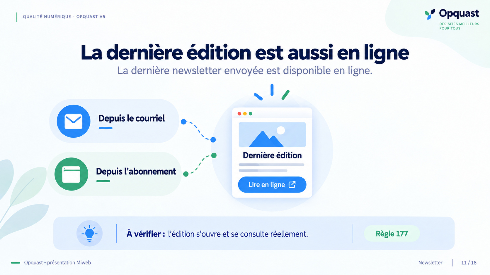
Lecture du visuel
La newsletter reçue et la page d’abonnement conduisent toutes deux vers une page Web affichant la dernière édition et un accès « Lire en ligne ». Une consigne demande de vérifier que le contenu s’ouvre et se consulte réellement.
Règle 177
La dernière newsletter envoyée est disponible en ligne.
Accès à la dernière édition
- Depuis le courriel.
- Depuis la page d’abonnement.
- Lire en ligne.
Vérification
À vérifier : l’édition s’ouvre et son contenu se consulte réellement.
Message à retenir
La dernière newsletter envoyée doit pouvoir être réellement consultée en ligne.
La règle 177 permet de consulter la dernière newsletter hors de la messagerie. Elle peut aussi aider une personne à voir ce qu’elle recevra avant de s’abonner.
Pour vérifier, suivons les accès depuis le courriel et la page d’abonnement, puis ouvrons l’édition. Une vignette ou un lien qui ne mène pas au contenu ne suffit pas.
Slide 12 - Garder les anciennes éditions consultables
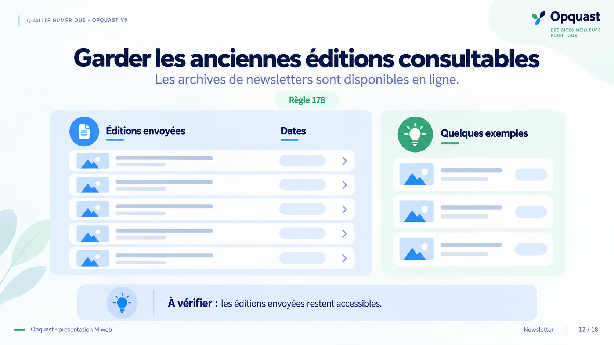
Lecture du visuel
Un rayon d’éditions envoyées, organisé par dates, est opposé à quelques exemples isolés. La slide rappelle que les archives sont disponibles en ligne et qu’il faut vérifier l’accès aux éditions envoyées.
Règle 178
Les archives de newsletters sont disponibles en ligne.
Éléments à retrouver
- Les éditions envoyées.
- Des repères de date.
- Un accès aux contenus archivés.
Vérification
À vérifier : les éditions envoyées restent accessibles.
Quelques exemples isolés ne constituent pas les archives du service.
Message à retenir
Les archives doivent être accessibles en ligne ; quelques exemples ne remplacent pas les éditions envoyées.
Après la dernière édition, nous regardons la mémoire du service. La règle 178 porte sur la disponibilité des archives en ligne ; le visuel distingue ces archives d’une sélection de quelques exemples.
Pour contrôler le dispositif, ouvrons la page d’archives et vérifions les éditions envoyées ainsi que leur accès. Nous ne pouvons pas conclure à partir d’une page vide ou d’une seule édition mise en avant.
Slide 13 - La newsletter ne vit pas seule
Lecture du visuel
La page de newsletter est placée au sein d’un site. Quatre domaines voisins sont reliés au parcours : formulaire, données personnelles, sécurité et contact. Le callout invite à auditer l’environnement du service.
Domaines reliés à la newsletter
- Formulaire
- Données personnelles
- Sécurité
- Contact
Périmètre
Auditer aussi le parcours qui entoure la newsletter.
Ces domaines transversaux ne constituent pas une liste exhaustive de règles.
Message à retenir
Les règles dédiées à la newsletter ne remplacent pas la relecture des autres éléments du parcours.
Les neuf règles donnent un cadre utile, mais l’abonné traverse aussi un formulaire et un site, et fournit des données personnelles. Le contact avec l’organisme et la sécurité des pages entrent aussi dans l’expérience.
Ces thèmes sont des dimensions à examiner, pas une nouvelle liste exhaustive de règles. L’audit peut s’élargir à partir des interfaces et des données réellement présentes.
Slide 14 - Relire le parcours avec VPTCS
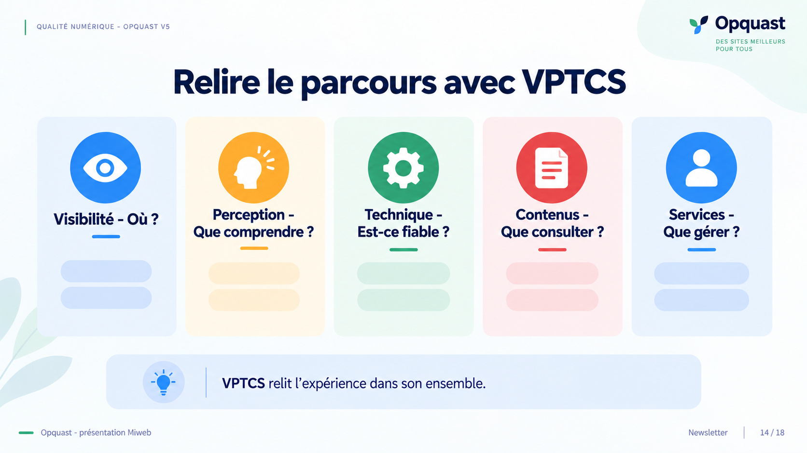
Lecture du visuel
Le parcours newsletter est relié à cinq questions : où trouver le service, que comprendre, si le mécanisme est fiable, quel contenu consulter et quel service gérer.
Les cinq attentes
- Visibilité : où trouver le service ?
- Perception : que comprendre ?
- Technique : est-ce fiable ?
- Contenus : que consulter ?
- Services : que gérer ?
Question de relecture
VPTCS relit l’expérience dans son ensemble.
Message à retenir
VPTCS permet de relire l’expérience de la newsletter dans son ensemble.
La newsletter sous le prisme du modèle VPTCS
Il permet de décomposer l’expérience utilisateur en cinq exigences fondamentales, garantissant que la newsletter remplit sa mission sans générer de friction ou de dette technique.
- Visibilité — accès au service : au-delà du trafic direct, la newsletter sécurise l’indépendance de l’organisation face aux algorithmes tiers et nourrit la crédibilité nécessaire au GEO (Generative Engine Optimization).
- Perception — compréhension : l’interface d’abonnement et les messages doivent garantir une lisibilité parfaite et une accessibilité universelle (inclusion), permettant à tout utilisateur, quelle que soit sa situation, de percevoir l’information.
- Technique — fonctionnement et fiabilité : ce pilier exige l’interopérabilité entre clients de messagerie et une vigilance stricte contre la surenchère de données. Le fonctionnement des liens et des formats d’envoi doit être irréprochable.
- Contenus — consultation et recherche : la valeur ajoutée repose sur la pertinence de l’information. Un contenu mal structuré ou non daté dégrade immédiatement l’autorité de l’émetteur.
- Services — gestion de l’abonnement et possibilité d’en sortir : la qualité d’une newsletter se juge principalement après le clic. Elle doit accompagner l’usager via des confirmations explicites et une gestion granulaire des préférences.
Slide 15 - Cas pratique : auditez ce dossier
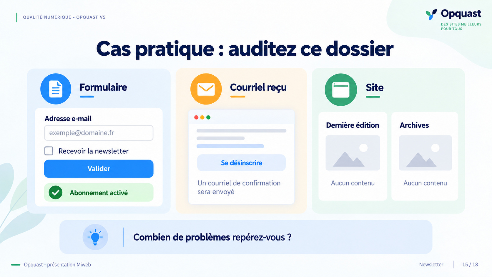
Lecture du visuel
Un dossier réunit trois surfaces. Le formulaire a une case newsletter cochée et affiche « Abonnement activé » après validation ; le courriel reçu annonce un message supplémentaire pour confirmer la désinscription ; le site affiche une dernière édition et des archives sans contenu. La question invite à compter les problèmes sans donner les numéros de règle.
Formulaire
- Adresse e-mail.
- Option « Recevoir la newsletter » cochée.
- Bouton « Valider ».
- État affiché : « Abonnement activé ».
Courriel reçu
- Lien « Se désinscrire ».
- Message annonçant qu’un courriel de confirmation sera envoyé.
Site
- Dernière édition : aucun contenu.
- Archives : aucun contenu.
Consigne
Combien de problèmes repérez-vous ?
Le dossier n’affiche pas les numéros de règle.
Message à retenir
Repérer les anomalies sur plusieurs surfaces avant de les relier aux règles et aux preuves nécessaires.
Laissez quelques instants au groupe pour examiner le dossier sans afficher de numéros de règle. On peut guider le regard du formulaire vers le courriel reçu, puis vers la page du site.
Le cas rassemble sept anomalies : inscription précochée, fréquence absente, activation immédiate, sortie difficile à repérer, courriel obligatoire pour confirmer la désinscription, dernière édition absente et archives vides. C’est un exercice visuel, pas une preuve de conformité technique.
Slide 16 - Observer ne suffit pas toujours
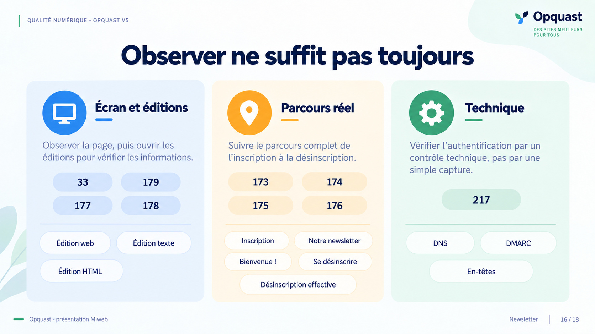
Lecture du visuel
La correction répartit les contrôles en trois postes. L’écran et les éditions couvrent les règles 33, 179, 177 et 178 ; le parcours réel couvre les règles 173, 174, 175 et 176 ; le contrôle technique de la règle 217 exige DNS et en-têtes, pas une simple capture.
Écran et éditions : 33, 179, 177, 178
Observer la page, puis ouvrir les éditions pour vérifier les informations.
- Édition Web
- Édition texte
- Édition HTML
Parcours réel : 173, 174, 175, 176
Suivre le parcours complet de l’inscription à la désinscription.
- Inscription
- Réception du message
- Désinscription
- Désinscription effective
Technique : 217
Vérifier l’authentification par un contrôle technique, pas par une simple capture.
- DNS
- DMARC
- En-têtes
Question
La page suffit-elle pour vérifier l’authentification ? Non : DNS et en-têtes sont nécessaires.
Message à retenir
Choisir la preuve adaptée : observation des contenus, test du parcours ou contrôle technique.
Reprenons les anomalies en séparant trois types de preuve. Certaines informations se voient à l’écran, mais les éditions doivent être ouvertes pour vérifier leur contenu. Les comportements d’inscription et de désinscription exigent de suivre le parcours.
Pour la règle 217, une capture d’écran ne prouve pas l’authentification du domaine : il faut contrôler les DNS et examiner les en-têtes. Une vérification doit correspondre à ce que la règle demande réellement.
Slide 17 - Retenir les neuf règles en trois temps
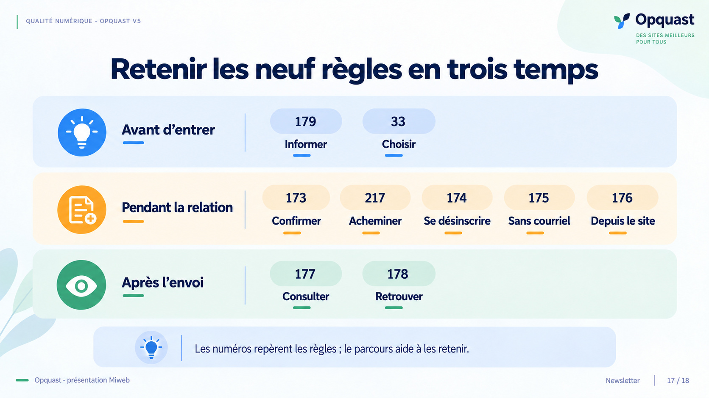
Lecture du visuel
Trois bandes temporelles organisent les règles. Avant d’entrer : 179 et 33, informer et choisir. Pendant la relation : 173, 217, 174, 175 et 176, confirmer, acheminer et se désinscrire. Après l’envoi : 177 et 178, consulter et retrouver.
Avant d’entrer
- 179 : informer sur la fréquence.
- 33 : laisser choisir.
Pendant la relation
- 173 : confirmer.
- 217 : acheminer.
- 174 : se désinscrire depuis chaque newsletter.
- 175 : sans nouveau courriel.
- 176 : depuis le site.
Après l’envoi
- 177 : consulter.
- 178 : retrouver.
Message
Les numéros repèrent les règles ; le parcours aide à les retenir.
Message à retenir
Les numéros repèrent les règles ; le parcours aide à les retenir.
Reprenons les neuf numéros dans l’ordre du parcours. Avant d’entrer, l’abonné s’informe sur la fréquence et choisit de s’inscrire. Pendant la relation, il confirme l’adresse, reçoit les messages et garde la maîtrise de sa désinscription.
Après l’envoi, il peut consulter la dernière édition et retrouver les précédentes. Les groupes servent de repère ; ils ne remplacent pas le libellé complet des règles.
Slide 18 - Testez le parcours de bout en bout
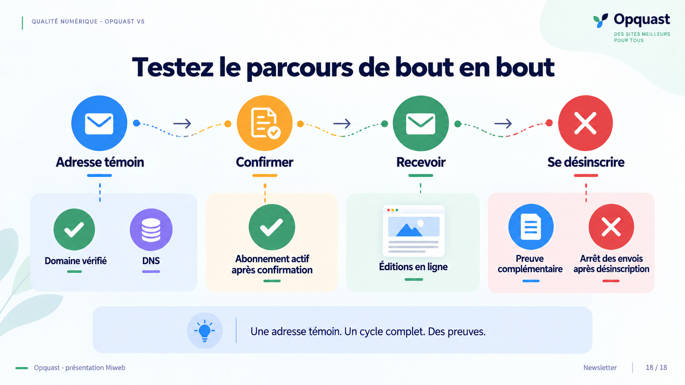
Lecture du visuel
Une adresse témoin passe par la confirmation, la réception puis la désinscription, avec l’état actif après confirmation et l’arrêt des envois après la sortie. Deux contrôles complémentaires portent sur les éditions en ligne et le domaine d’envoi, avec DNS.
Cycle de l’adresse témoin
- Confirmer la demande.
- Recevoir la newsletter.
- Se désinscrire.
- Vérifier l’arrêt des envois.
États à constater
- Abonnement actif après confirmation.
- Arrêt des envois après désinscription.
Preuves complémentaires
- Consulter les éditions en ligne.
- Vérifier le domaine à partir des données DNS et des en-têtes.
Message
Une adresse témoin. Un cycle complet. Des preuves.
Message à retenir
Un cycle de test produit des preuves utiles, complétées par des contrôles des éditions et du domaine.
Pour conclure, réalisons un cycle avec une adresse témoin : demander l’inscription, confirmer l’adresse, vérifier la réception, puis se désinscrire et observer l’arrêt des envois.
Ce cycle ne prouve pas à lui seul que le lien fonctionne dans chaque ancienne édition ni que les archives sont complètes. Il faut aussi ouvrir les éditions en ligne et contrôler le domaine à partir des données DNS et des en-têtes nécessaires.